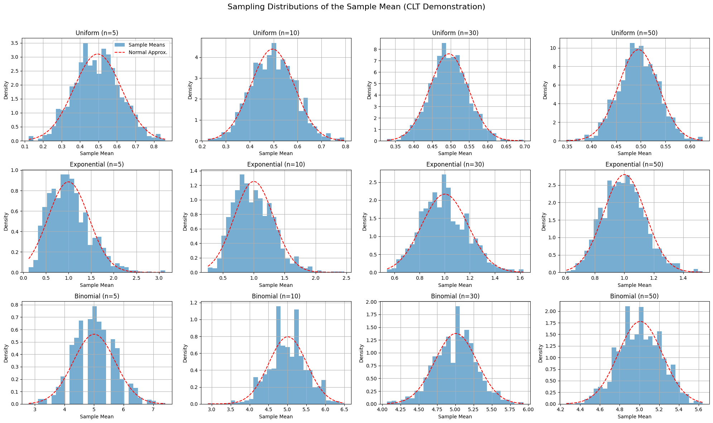

Problem 1
In this section, we explore the foundational population distributions that will be used to demonstrate the Central Limit Theorem (CLT). The three chosen distributions are:
- Uniform Distribution
- Exponential Distribution
- Binomial Distribution
A synthetic population of size \(N = 10{,}000\) will be generated for each distribution using random number generation techniques.
📘 Uniform Distribution
The continuous uniform distribution over the interval \([a, b]\) is defined by the probability density function (PDF):
For simulation purposes, we choose: - \(a = 0\) - \(b = 1\)
So:
Mean and variance of a uniform distribution:
📘 Exponential Distribution
The exponential distribution models the time between events in a Poisson process and has the PDF:
We use \(\lambda = 1\) in the simulations.
Mean and variance:
For \(\lambda = 1\), we get:
📘 Binomial Distribution
The binomial distribution models the number of successes in \(n\) independent Bernoulli trials with success probability \(p\). The probability mass function (PMF) is:
We use: - \(n = 10\) - \(p = 0.5\)
Mean and variance:
For our parameters:
🔢 Simulation Plan
- Generate \(N = 10{,}000\) samples from each distribution.
- Validate empirical means and variances against theoretical values.
- Use this data for downstream sampling and CLT visualization.
2. Perform Sampling & Compute Sample Means
This section outlines the process of constructing sampling distributions of the sample mean, which is the empirical basis for demonstrating the Central Limit Theorem (CLT).
🧮 Sampling Strategy
We define a set of sample sizes:
For each population distribution (Uniform, Exponential, Binomial), and for each sample size \(n\), the following steps are performed:
🔁 Iterative Sampling Process
Let \(N = 10{,}000\) be the size of the population dataset, and \(R = 1{,}000\) the number of repeated samples.
For each iteration \(r = 1, 2, ..., R\):
-
Draw a simple random sample: $$ {X_1^{(r)}, X_2^{(r)}, \dots, X_n^{(r)}} \sim \text{Population} $$
-
Compute the sample mean: $$ \bar{X}^{(r)} = \frac{1}{n} \sum_{i=1}^{n} X_i^{(r)} $$
-
Store \(\bar{X}^{(r)}\) for analysis.
After \(R\) repetitions, we obtain a sampling distribution of the sample mean:
📈 Theoretical Expectation
According to the Central Limit Theorem, for sufficiently large \(n\):
Where: - \(\mu\) is the population mean - \(\sigma^2\) is the population variance
As \(n\) increases, the sampling distribution of \(\bar{X}\) becomes approximately normal, regardless of the population's shape.
💾 Data Collection Summary
- Input: Population data of size \(N = 10{,}000\)
- Output: Sampling distributions of sample means
- Storage: One distribution of 1,000 means per (\(\text{distribution}\), \(n\)) pair
This systematic approach allows us to empirically demonstrate the CLT across various conditions.
3. Visualize Sampling Distributions
The goal of this section is to empirically observe the Central Limit Theorem (CLT) in action by visualizing the sampling distributions of the sample mean across different population types and sample sizes.
🎯 Objectives
- Create histograms of sample means drawn from:
- Uniform
- Exponential
- Binomial
- Compare how the shape of the sampling distribution changes as the sample size increases.
- Overlay a theoretical normal distribution to visualize convergence.
📐 Theoretical Background
According to the CLT, for a population with mean \(\mu\) and finite variance \(\sigma^2\), the distribution of the sample mean \(\bar{X}\) approaches a normal distribution as the sample size \(n\) increases:
This holds regardless of the shape of the original population distribution, provided \(n\) is sufficiently large and the samples are independent.
🧪 Simulation Parameters
- Population size: \(10{,}000\)
- Sample sizes: \(n \in \{5, 10, 30, 50\}\)
- Repetitions per configuration: \(1{,}000\)
- Distributions used:
- Uniform\((0,1)\)
- Exponential\((\lambda=1)\)
- Binomial\((n=10, p=0.5)\)
📊 Python Code: All Sampling Distributions in a Single Figure
import numpy as np
import matplotlib.pyplot as plt
from scipy.stats import norm
# Settings
distributions = {
'Uniform': np.random.uniform(0, 1, 10_000),
'Exponential': np.random.exponential(scale=1.0, size=10_000),
'Binomial': np.random.binomial(n=10, p=0.5, size=10_000)
}
sample_sizes = [5, 10, 30, 50]
repeats = 1000
# Setup subplot grid
fig, axes = plt.subplots(nrows=3, ncols=4, figsize=(20, 12))
fig.suptitle('Sampling Distributions of the Sample Mean (CLT Demonstration)', fontsize=16)
# Iterate through distributions and sample sizes
for row_idx, (dist_name, population) in enumerate(distributions.items()):
for col_idx, n in enumerate(sample_sizes):
ax = axes[row_idx, col_idx]
# Generate sample means
sample_means = [np.mean(np.random.choice(population, size=n, replace=False)) for _ in range(repeats)]
# Histogram
ax.hist(sample_means, bins=30, density=True, alpha=0.6, label='Sample Means')
# Overlay Normal Curve
mu = np.mean(population)
sigma = np.std(population) / np.sqrt(n)
x = np.linspace(min(sample_means), max(sample_means), 200)
ax.plot(x, norm.pdf(x, mu, sigma), 'r--', label='Normal Approx.')
# Titles and labels
ax.set_title(f'{dist_name} (n={n})')
ax.set_xlabel('Sample Mean')
ax.set_ylabel('Density')
ax.grid(True)
if row_idx == 0 and col_idx == 0:
ax.legend()
# Adjust layout
plt.tight_layout(rect=[0, 0, 1, 0.96]) # Leave space for the main title
plt.show()

🔍 Interpretation
- As \(n\) increases, the sampling distributions become increasingly bell-shaped, closely approximating the normal distribution.
- The effect is more dramatic for skewed populations (e.g., exponential), confirming that the CLT compensates for non-normality through sample aggregation.
-
The overlaid normal curves demonstrate the expected theoretical behavior:
-
Mean \(\mu\) is preserved.
- Variance shrinks by a factor of \(\frac{1}{n}\).
4. Analyze Convergence Behavior
This section investigates the dynamics of convergence in sampling distributions of the sample mean. While the Central Limit Theorem (CLT) guarantees asymptotic normality, the rate of convergence and the shape of convergence depend on key properties of the population distribution.
📈 Rate of Convergence Toward Normality
Let \(\bar{X}_n\) denote the sample mean from a random sample of size \(n\):
According to the CLT:
The speed at which \(\bar{X}_n\) approaches normality depends on: - The skewness and kurtosis of the original distribution - The sample size \(n\) - The variance \(\sigma^2\) of the population
🧭 Influence of Original Distribution Shape
The shape of the population distribution heavily influences how fast convergence occurs:
| Distribution Type | Shape Characteristics | Convergence Speed |
|---|---|---|
| Uniform\((a, b)\) | Symmetric, bounded | Fast |
| Binomial\((n, p)\) | Discrete, symmetric if \(p=0.5\) | Moderate to Fast |
| Exponential\((\lambda)\) | Positively skewed, unbounded | Slow (needs large \(n\)) |
For heavily skewed or heavy-tailed distributions (e.g., exponential), larger sample sizes are needed for the sampling distribution to resemble a normal distribution.
📏 Role of Variance in Spread of Sample Means
The spread (standard deviation) of the sampling distribution of the mean decreases as sample size increases:
Thus, larger \(n\) not only improves normality, but also reduces uncertainty in sample-based estimates. The corresponding standard deviation of the sample mean is:
This effect is critical in: - Confidence interval construction - Hypothesis testing - Practical estimation scenarios
🔍 Empirical Indicators of Convergence
In practice, convergence toward normality can be visually and numerically assessed through: - Histogram symmetry and bell-shaped appearance - Overlay with a normal density curve - Quantitative metrics like skewness, kurtosis, or the Shapiro–Wilk test
📌 Summary
- CLT convergence is universal but its rate is conditional on the population.
- Symmetric distributions converge quickly.
- Skewed or heavy-tailed distributions require larger sample sizes.
- The spread of the sampling distribution shrinks with \(n\), increasing precision in estimation.
This deepens our understanding of why and how the CLT justifies statistical inference, even when the data are non-normal.
5. Discuss Practical Applications
The Central Limit Theorem (CLT) is not merely a theoretical result — it underpins many practical methods across statistics, science, industry, and finance. This section illustrates how and why the CLT is applied in real-world scenarios involving uncertainty, estimation, and control.
🧪 1. Estimating Population Means from Samples
One of the most common applications of the CLT is to estimate the population mean \(\mu\) using a sample mean \(\bar{X}\):
This allows us to: - Construct confidence intervals:
$$ \bar{X} \pm z_{\alpha/2} \cdot \frac{s}{\sqrt{n}} $$
- Perform hypothesis testing on means when the population distribution is unknown.
This is critical in: - Clinical trials and medical research - Survey-based population studies - Polling and social sciences
🏭 2. Monitoring Quality in Production Systems
In industrial processes, the CLT enables statistical process control (SPC) using sample-based metrics:
- Control charts track \(\bar{X}\) to detect shifts in process mean.
- Assumes sampling distribution is approximately normal even if measurements are not.
Let \(X_1, \dots, X_n\) be measurements per batch. Then:
This is foundational for: - Six Sigma methodologies - Manufacturing consistency - Detecting out-of-control conditions early
💹 3. Risk and Uncertainty in Financial Modeling
In finance, many models rely on CLT to justify assumptions of normal returns, especially over aggregated time periods or portfolios:
- Daily returns \(R_t\) may be non-normal, but the sum or average of many returns over time:
$$ \bar{R}n = \frac{1}{n} \sum{t=1}^{n} R_t $$
tends toward normality due to CLT.
Applications include: - Value at Risk (VaR) models - Monte Carlo simulations of portfolio behavior - Central limit-based pricing in actuarial models
Even though raw financial data may be skewed or heavy-tailed, the CLT justifies use of Gaussian approximations in aggregated contexts.
🧠 Broader Perspective
The CLT enables practitioners to: - Use sample statistics as proxies for unknown population parameters - Apply parametric tests and confidence intervals even in non-normal environments - Reduce complex or irregular distributions into well-understood normal approximations
In essence, the CLT acts as a statistical equalizer, making inference possible in settings where full knowledge of the underlying distribution is infeasible.
📌 Conclusion
The Central Limit Theorem is a foundational pillar of statistical practice, providing the mathematical justification for: - Reliable inference - Predictive modeling - Operational control
Its importance spans disciplines, reinforcing both the rigor and reach of statistical thinking.